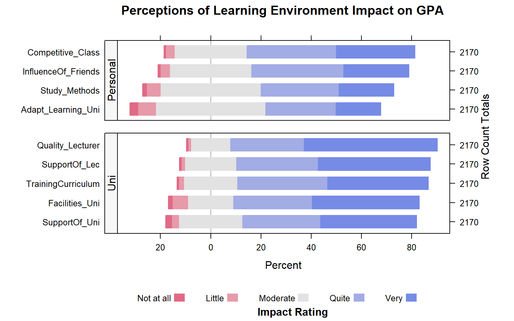
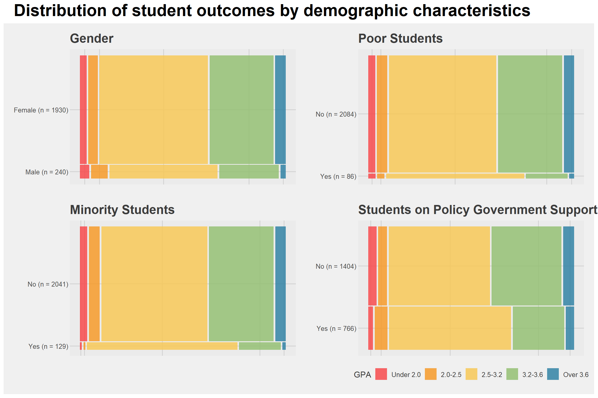

pacman::p_load(gtsummary, knitr, DT, HH, patchwork,
ggthemes, rcompanion, tidyverse)Take-Home Exercise 1: Creating enlightening and truthful data visualisations
1 Overview
2 Data
The dataset used for this exercise is the results of a survey on factors affecting learning outcomes of students at the University of Education - Vietnam National University, Hanoi. The respondents consist of 2170 students and alumni from March to June 2023.
The data can be classified into two groups of variables as follows:
- Demographic information of students (e.g., gender, parents qualifications and occupations)
- Subjective perceptions and assessments of the learning environment (e.g., assessment the quality of university facilities, lecturers or training curriculum)
These variables can be assessed against their grade point average, which has been grouped into 5 bands in the dataset.
2.1 R Packages
3 Data Wrangling
3.1 Import Data
The f
student <- readxl::read_excel('data/student.xlsx')summary(student) Year Gender Policy_Stu Minority_Stu Poor_Stu
Min. :3.000 Min. :1.000 Min. :1.000 Min. :1.000 Min. :1.00
1st Qu.:4.000 1st Qu.:2.000 1st Qu.:1.000 1st Qu.:2.000 1st Qu.:2.00
Median :5.000 Median :2.000 Median :2.000 Median :2.000 Median :2.00
Mean :4.672 Mean :1.889 Mean :1.647 Mean :1.941 Mean :1.96
3rd Qu.:5.000 3rd Qu.:2.000 3rd Qu.:2.000 3rd Qu.:2.000 3rd Qu.:2.00
Max. :5.000 Max. :2.000 Max. :2.000 Max. :2.000 Max. :2.00
Father_Edu Mother_Edu Father_Occupation Mother_Occupation
Min. :1.000 Min. :1.000 Min. :1.000 Min. :1.000
1st Qu.:3.000 1st Qu.:3.000 1st Qu.:2.000 1st Qu.:2.000
Median :4.000 Median :4.000 Median :3.000 Median :3.000
Mean :3.747 Mean :3.664 Mean :2.484 Mean :2.498
3rd Qu.:5.000 3rd Qu.:5.000 3rd Qu.:3.000 3rd Qu.:3.000
Max. :6.000 Max. :6.000 Max. :5.000 Max. :5.000
Time_Friends Time_SocicalMedia Time_Studying GPA
Min. :1.000 Min. :1.000 Min. :1.000 Min. :1.0
1st Qu.:1.000 1st Qu.:2.000 1st Qu.:5.000 1st Qu.:3.0
Median :2.000 Median :3.000 Median :5.000 Median :3.0
Mean :2.274 Mean :2.836 Mean :4.719 Mean :3.3
3rd Qu.:3.000 3rd Qu.:4.000 3rd Qu.:5.000 3rd Qu.:4.0
Max. :5.000 Max. :5.000 Max. :5.000 Max. :5.0
Adapt_Learning_Uni Study_Methods SupportOf_Uni SupportOf_Lec
Min. :1.000 Min. :1.000 Min. :1.000 Min. :1.000
1st Qu.:3.000 1st Qu.:3.000 1st Qu.:3.000 1st Qu.:4.000
Median :3.000 Median :4.000 Median :4.000 Median :4.000
Mean :3.502 Mean :3.662 Mean :4.001 Mean :4.186
3rd Qu.:4.000 3rd Qu.:4.000 3rd Qu.:5.000 3rd Qu.:5.000
Max. :5.000 Max. :5.000 Max. :5.000 Max. :5.000
Facilitie_Uni Quality_Lecturer TrainingCurriculum Competitive_Class
Min. :1.000 Min. :1.000 Min. :1.000 Min. :1.000
1st Qu.:3.000 1st Qu.:4.000 1st Qu.:4.000 1st Qu.:3.000
Median :4.000 Median :5.000 Median :4.000 Median :4.000
Mean :4.073 Mean :4.329 Mean :4.128 Mean :3.935
3rd Qu.:5.000 3rd Qu.:5.000 3rd Qu.:5.000 3rd Qu.:5.000
Max. :5.000 Max. :5.000 Max. :5.000 Max. :5.000
InfuenceF_Friends
Min. :1.000
1st Qu.:3.000
Median :4.000
Mean :3.831
3rd Qu.:5.000
Max. :5.000 From the above output, there are no missing values in the data.
3.2 Replacing values
For interpretability of results, we will rename the values in the dataset to their corresponding survey answers. The following code chunk uses mutate() and factor() from the tidyverse to recode the numbers to the text equivalents. We also correct what appears to be a typo in the column names using rename() from the dplyr package.
student <- student %>%
rename(
Time_SocialMedia = "Time_SocicalMedia",
InfluenceOf_Friends = "InfuenceF_Friends",
Facilities_Uni = "Facilitie_Uni"
)
student_l <- student %>%
mutate (
Year = factor(Year, levels = 1:5,
labels = c("First-year", "Second-year", "Third-year", "Fourth-year", "Graduated")),
Gender = factor(Gender, levels = 1:2,
labels = c("Male", "Female")),
across(c(Policy_Stu, Minority_Stu, Poor_Stu),
~factor(.x, levels = 1:2, labels = c("Yes", "No"))),
across(c(Father_Edu, Mother_Edu),
~factor(.x, levels = 1:6,
labels = c("Primary school", "Secondary school", "High school", "College school", "University/graduate", "Other"))),
across(c(Father_Occupation, Mother_Occupation),
~factor(.x, levels = 1:5,
labels = c("Government employee", "Self-employment", "Freelance",
"Other", "Not public"))),
across(c(Time_Friends, Time_SocialMedia),
~factor(.x, levels = 1:5,
labels = c("Under 1h", "1-2h", "2-3h", "3-4h", "Over 4h"))),
Time_Studying = factor(Time_Studying, levels = 1:5,
labels = c("Under 2h", "2-4h", "4-6h", "6-8h", "Over 8h")),
GPA = factor(GPA, levels = 1:5,
labels = c("Under 2.0", "2.0-2.5", "2.5-3.2", "3.2-3.6", "Over 3.6")),
across(c(Adapt_Learning_Uni, Study_Methods, SupportOf_Uni, SupportOf_Lec, Facilities_Uni, Quality_Lecturer, TrainingCurriculum, Competitive_Class, InfluenceOf_Friends),
~factor(.x, levels = 1:5,
labels = c("Not at all", "Little", "Moderate", "Quite", "Very")))
) %>%
relocate(GPA, .after=last_col())The following code chunk prints uses tbl_summary from gtsummary to view a summary table of results from the survey, specifically the frequency and proportion of each response.
tbl_wide_summary(student_l)| Characteristic | n | % |
|---|---|---|
| Year | ||
| First-year | 0 | 0% |
| Second-year | 0 | 0% |
| Third-year | 135 | 6.2% |
| Fourth-year | 441 | 20% |
| Graduated | 1,594 | 73% |
| Gender | ||
| Male | 240 | 11% |
| Female | 1,930 | 89% |
| Policy_Stu | 766 | 35% |
| Minority_Stu | 129 | 5.9% |
| Poor_Stu | 86 | 4.0% |
| Father_Edu | ||
| Primary school | 120 | 5.5% |
| Secondary school | 274 | 13% |
| High school | 603 | 28% |
| College school | 370 | 17% |
| University/graduate | 643 | 30% |
| Other | 160 | 7.4% |
| Mother_Edu | ||
| Primary school | 125 | 5.8% |
| Secondary school | 294 | 14% |
| High school | 592 | 27% |
| College school | 495 | 23% |
| University/graduate | 502 | 23% |
| Other | 162 | 7.5% |
| Father_Occupation | ||
| Government employee | 514 | 24% |
| Self-employment | 565 | 26% |
| Freelance | 650 | 30% |
| Other | 409 | 19% |
| Not public | 32 | 1.5% |
| Mother_Occupation | ||
| Government employee | 491 | 23% |
| Self-employment | 557 | 26% |
| Freelance | 695 | 32% |
| Other | 405 | 19% |
| Not public | 22 | 1.0% |
| Time_Friends | ||
| Under 1h | 557 | 26% |
| 1-2h | 785 | 36% |
| 2-3h | 590 | 27% |
| 3-4h | 152 | 7.0% |
| Over 4h | 86 | 4.0% |
| Time_SocialMedia | ||
| Under 1h | 229 | 11% |
| 1-2h | 735 | 34% |
| 2-3h | 634 | 29% |
| 3-4h | 306 | 14% |
| Over 4h | 266 | 12% |
| Time_Studying | ||
| Under 2h | 17 | 0.8% |
| 2-4h | 47 | 2.2% |
| 4-6h | 78 | 3.6% |
| 6-8h | 245 | 11% |
| Over 8h | 1,783 | 82% |
| Adapt_Learning_Uni | ||
| Not at all | 70 | 3.2% |
| Little | 152 | 7.0% |
| Moderate | 954 | 44% |
| Quite | 606 | 28% |
| Very | 388 | 18% |
| Study_Methods | ||
| Not at all | 33 | 1.5% |
| Little | 120 | 5.5% |
| Moderate | 869 | 40% |
| Quite | 674 | 31% |
| Very | 474 | 22% |
| SupportOf_Uni | ||
| Not at all | 51 | 2.4% |
| Little | 61 | 2.8% |
| Moderate | 553 | 25% |
| Quite | 675 | 31% |
| Very | 830 | 38% |
| SupportOf_Lec | ||
| Not at all | 20 | 0.9% |
| Little | 28 | 1.3% |
| Moderate | 448 | 21% |
| Quite | 706 | 33% |
| Very | 968 | 45% |
| Facilities_Uni | ||
| Not at all | 36 | 1.7% |
| Little | 131 | 6.0% |
| Moderate | 399 | 18% |
| Quite | 677 | 31% |
| Very | 927 | 43% |
| Quality_Lecturer | ||
| Not at all | 16 | 0.7% |
| Little | 24 | 1.1% |
| Moderate | 342 | 16% |
| Quite | 636 | 29% |
| Very | 1,152 | 53% |
| TrainingCurriculum | ||
| Not at all | 12 | 0.6% |
| Little | 45 | 2.1% |
| Moderate | 465 | 21% |
| Quite | 779 | 36% |
| Very | 869 | 40% |
| Competitive_Class | ||
| Not at all | 13 | 0.6% |
| Little | 76 | 3.5% |
| Moderate | 629 | 29% |
| Quite | 772 | 36% |
| Very | 680 | 31% |
| InfluenceOf_Friends | ||
| Not at all | 20 | 0.9% |
| Little | 82 | 3.8% |
| Moderate | 707 | 33% |
| Quite | 797 | 37% |
| Very | 564 | 26% |
| GPA | ||
| Under 2.0 | 73 | 3.4% |
| 2.0-2.5 | 109 | 5.0% |
| 2.5-3.2 | 1,189 | 55% |
| 3.2-3.6 | 692 | 32% |
| Over 3.6 | 107 | 4.9% |
3.3 Remove unnecessary values in Year
As seen in the table above, no students from first- or second-year responded to the survey. Hence, we will remove these from the dataset as they are not relevant using droplevels()
student_l <-droplevels(student_l)
tbl_wide_summary(student_l, include = Year)| Characteristic | n | % |
|---|---|---|
| Year | ||
| Third-year | 135 | 6.2% |
| Fourth-year | 441 | 20% |
| Graduated | 1,594 | 73% |
4 Perceptions of learning environment
4.1 Data preparation
First, we create the table perceptions to count the number of occurences of each response per question. Using pivot_longer(), the variables are gathered into a single column to allow counting by group for each variable-response pair. count() will count the occurence of each pair, and pivot_wider() converts the final result to a table to display the count of each response for each
perceptions <- student_l %>%
select(Adapt_Learning_Uni, Study_Methods, SupportOf_Uni, SupportOf_Lec, Facilities_Uni, Quality_Lecturer, TrainingCurriculum, Competitive_Class, InfluenceOf_Friends) %>%
pivot_longer(cols = everything(), names_to = "Variable", values_to = "Answer") %>%
count(Variable, Answer) %>%
pivot_wider(names_from = Answer, values_from = n, values_fill = 0)
kable(perceptions)| Variable | Not at all | Little | Moderate | Quite | Very |
|---|---|---|---|---|---|
| Adapt_Learning_Uni | 70 | 152 | 954 | 606 | 388 |
| Competitive_Class | 13 | 76 | 629 | 772 | 680 |
| Facilities_Uni | 36 | 131 | 399 | 677 | 927 |
| InfluenceOf_Friends | 20 | 82 | 707 | 797 | 564 |
| Quality_Lecturer | 16 | 24 | 342 | 636 | 1152 |
| Study_Methods | 33 | 120 | 869 | 674 | 474 |
| SupportOf_Lec | 20 | 28 | 448 | 706 | 968 |
| SupportOf_Uni | 51 | 61 | 553 | 675 | 830 |
| TrainingCurriculum | 12 | 45 | 465 | 779 | 869 |
We will also add a column Type which will differentiate personal factors (i.e., ability to adapt to the university learning environment, studying methods, competition within the class, and friends) from university factors (e.g., level of support from the university or quality of uni lecturers).
Type= c("Personal","Personal","Uni", "Personal","Uni", "Personal", "Uni", "Uni", "Uni")
perceptions2 <- cbind(perceptions, Type)### Visualisation
likert(Variable ~.| Type,
data=perceptions2,
layout=c(1,2),
scales=list(y=list(relation="free")),
between=list(y=1),
strip.left=strip.custom(bg="gray97"),
strip=FALSE,
ylab=NULL,
as.percent=TRUE,
positive.order = TRUE,
main = list("Perceptions of Learning Environment Impact on GPA",
x=unit(.55, "npc")),
sub = list("Impact Rating",x=unit(.57, "npc"))
)
5 Visualising Association with GPA - Cramer’s V
5.1 Calculating Chi-Squared Value
First, we will create a contingency table between the
corr_vars <- student_l %>%
select(-GPA) %>%
colnames()
perform_chi_test <- function(variable) {
# Create a contingency table
contingency_table <- table(student_l$GPA, student_l[[variable]])
# Perform the chi-squared test
chi_result <- chisq.test(contingency_table)
# Return relevant results
return(data.frame(
Variable = variable,
Chi_Squared = chi_result$statistic,
DF = chi_result$parameter,
P_Value = chi_result$p.value
))
}
get_chisq_residuals <- function(variable) {
# Create a contingency table
contingency_table <- table(student_l$GPA, student_l[[variable]])
# Perform the chi-squared test
chi_result <- chisq.test(contingency_table)
# Return relevant results
return(chi_result$residuals)
}# Apply the function to all specified variables using lapply
chisq_list <- lapply(corr_vars, perform_chi_test)
# Combine the results into a single data frame
chisq_df <- do.call(rbind, chisq_list)Code
chisq_plot_df <- chisq_df %>%
mutate(
Significance = case_when(
P_Value < 0.01 ~ "p < 0.01",
P_Value < 0.05 ~ "p < 0.05",
TRUE ~ "p >= 0.05"
),
Significance = factor(Significance, levels = c("p < 0.01", "p < 0.05", "p >= 0.05"))
)
ggplot(chisq_plot_df, aes(x = reorder(Variable, Chi_Squared), y = Chi_Squared, fill = Significance)) +
geom_col() +
coord_flip() +
scale_fill_manual(values = c(
"p < 0.01" = "darkred",
"p < 0.05" = "orange",
"p >= 0.05" = "grey"
)) +
labs(
title = "Chi-Square Values by Variable",
subtitle = "Higher values indicate stronger association with the target",
x = "",
y = "Chi-Square Statistic",
fill = "Significance Level"
) +
theme_economist()
DT::datatable(chisq_df, rownames=FALSE) 5.2 Calculating Strength of Association
predictors <- student_l %>%
select(-GPA) %>%
colnames()
get_cramersv <- function(variable) {
cramerV(student_l[[variable]], student_l[["GPA"]])
}
cramersv <- sapply(predictors, get_cramersv)
assoc_df <- data.frame(
Variable = names(cramersv),
Association = as.numeric(cramersv)
) %>%
mutate(Variable = str_remove(Variable, "\\.Cramer V")) %>%
arrange(desc(Association))
datatable(assoc_df)6 References
6.1 Data Source
Ngoc Le, Diep (2024), “Dataset about VNU students”, Mendeley Data, V1, doi: 10.17632/23ppcdbmhc.1